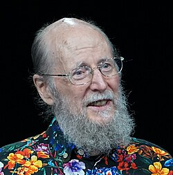
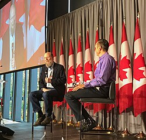

Richard Sutton | |
|---|---|
 Sutton at NeurIPS 2025 | |
| Born | Richard Stuart Sutton 1957 or 1958 (age 68–69) |
| Citizenship | Canada since 2015,[4] USA until 2017[5] |
| Education | Stanford University (BA) University of Massachusetts, Amherst (MS, PhD) |
| Known for | Temporal difference learning The Bitter Lesson |
| Awards |
|
| Scientific career | |
| Fields | |
| Institutions | |
| Thesis | Temporal credit assignment in reinforcement learning (1984) |
| Andrew Barto[2] | |
Doctoral students | |
| Website | richsutton |
.jpg){kind=link}
Richard Stuart Sutton FRS FRSC (born 1957 or 1958) is a Canadian computer scientist. He is a professor of computing science at the University of Alberta, fellow & Chief Scientific Advisor at the Alberta Machine Intelligence Institute, and a research scientist at Keen Technologies.[1][6] Sutton is considered one of the founders of modern computational reinforcement learning.[7] In particular, he contributed to temporal difference learning and policy gradient methods.[8] He received the 2024 Turing Award with Andrew Barto.[9][10]
Early life and education
Richard Sutton was born in either 1957 or 1958[11][12] in Toledo, Ohio,[13] and grew up in Oak Brook, Illinois, a suburb of Chicago, United States.[14]
Sutton received his Bachelor of Arts (BA) degree in psychology from Stanford University in 1978 before taking a Master of Science (1980) and PhD[2] (1984) in computer science from the University of Massachusetts Amherst supervised by Andrew Barto.[2] His doctoral dissertation[2] introduced actor-critic architectures and temporal credit assignment.[15][8]
He was influenced by Harry Klopf's work in the 1970s, which proposed that supervised learning is insufficient for AI or explaining intelligent behavior, and trial-and-error learning, driven by "hedonic aspects of behavior", is necessary. This focused his interest to reinforcement learning.[16]
{kind=link}

Career and research
Sutton held a postdoctoral research position at the University of Massachusetts Amherst in 1984.[17] He worked at GTE Laboratories in Waltham, Massachusetts as principal member of technical staff from 1985 to 1994, then returned to the University of Massachusetts Amherst as a senior research scientist.[18] He joined AT&T Labs Shannon Laboratory in Florham Park, New Jersey as principal technical staff member from 1998 to 2002.[10] He has been a professor of computing science at the University of Alberta since 2003, where he helped establish the Reinforcement Learning and Artificial Intelligence Laboratory.[19] In 2017 he became a distinguished research scientist with Google DeepMind and helped launch DeepMind Alberta in Edmonton, a research office operated in close collaboration with the University of Alberta.[20]
- 1984: Postdoctoral researcher, University of Massachusetts Amherst (Amherst, Massachusetts)
- 1985–1994: Principal member of technical staff, Computer and Intelligent Systems Laboratory, GTE Laboratories (Waltham, Massachusetts)
- 1995–1998: Senior research scientist, University of Massachusetts Amherst (Amherst, Massachusetts)
- 1998–2002: Principal technical staff member, Artificial Intelligence Department, AT&T Labs Shannon Laboratory (Florham Park, New Jersey)
- 2003–present: Professor of computing science, University of Alberta (Edmonton, Alberta)
- 2017–2023: Distinguished research scientist, DeepMind Alberta, Google DeepMind (Edmonton, Alberta)
- 2024–Present: Research scientist, Keen Technologies
Reinforcement learning
Sutton joined Andrew Barto in the early 1980s at UMass, trying to explore the behavior of neurons in the human brain as the basis for human intelligence, a concept that had been advanced by computer scientist A. Harry Klopf. Sutton and Barto used mathematics toward furthering the concept and using it as the basis for artificial intelligence. This concept became known as reinforcement learning and went on to becoming a key part of artificial intelligence techniques.[21]
Barto and Sutton used Markov decision processes (MDP) as the mathematical foundation to explain how agents (algorithmic entities) made decisions when in a stochastic or random environment, receiving rewards at the end of every action. Traditional MDP theory assumed the agents knew all information about the MDPs in their attempt toward maximizing their cumulative rewards. Barto and Sutton's reinforcement learning techniques allowed for both the environment and the rewards to be unknown, and thus allowed for these category of algorithms to be applied to a wide array of problems.[22]
Sutton returned to Canada in the 2000s and continued working on the topic which continued to develop in academic circles until one of its first major real world applications saw Google's AlphaGo program built on this concept defeating the then prevailing human champion.[21] Barto and Sutton have widely been credited and accepted as pioneers of modern reinforcement learning, with the technique itself being foundational to the AI boom.[23]
In a 2019 essay, Sutton proposed the "bitter lesson", which criticized the field of AI research for failing to learn that "building in how we think we think does not work in the long run", arguing that "70 years of AI research [had shown] that general methods that leverage computation are ultimately the most effective, and by a large margin", beating efforts building on human knowledge about specific fields like computer vision, speech recognition, chess or Go.[24][25]
Sutton argues that large language models aren’t capable of learning on-the-job, and so new model architectures are required to enable continual learning.[26] Sutton further argues that a special training phase will be unnecessary — the agent will learn on-the-fly, rendering large language models obsolete.[26]
In 2023, Sutton and John Carmack announced a partnership for the development of artificial general intelligence (AGI).[6]
Awards and honors
Sutton has been a Fellow of the Association for the Advancement of Artificial Intelligence (AAAI) since 2001;[27] his nomination read: "For significant contributions to many topics in machine learning, including reinforcement learning, temporal difference techniques, and neural networks."[27] In 2003, he received the President's Award from the International Neural Network Society[28] and in 2013, the Outstanding Achievement in Research award from the University of Massachusetts Amherst.[29] He received the 2024 Turing Award from the Association for Computing Machinery together with Andrew Barto; the citation of the award read: "For developing the conceptual and algorithmic foundations of reinforcement learning."[9][30]
In 2016, Sutton was elected Fellow of the Royal Society of Canada.[31] In 2021, he was elected Fellow of the Royal Society (FRS) of London.[32][33][34][8][4]
Research
Sutton introduced temporal-difference methods for prediction and control, establishing convergence properties and practical algorithms.[35] He proposed integrated learning and planning through the Dyna architecture.[36] He co-developed the options framework for temporal abstraction in reinforcement learning.[37] He co-authored the first modern policy gradient formulation with function approximation.[38][17][10][34]
Sutton's essay The Bitter Lesson argued that general methods that scale with computation dominate domain-specific approaches in the long run.[39]
His former doctoral students include David Silver and Doina Precup.[3]
Selected publications
His publications[1] include:
| Year | Title | Venue or publisher | Notes |
|---|---|---|---|
| 1988 | Learning to predict by the methods of temporal differences | Machine Learning 3, 9-44 | TD learning foundations[40] |
| 1990 | Neural Networks for Control | MIT Press | co-editor with W. T. Miller III and P. J. Werbos[41] |
| 1991 | Dyna, an integrated architecture for learning, planning, and reacting | ACM SIGART Bulletin | Early Dyna results[42] |
| 1998 | Reinforcement Learning: An Introduction | MIT Press | with Andrew G. Barto. First edition[43] |
| 1999 | Between MDPs and semi-MDPs, a framework for temporal abstraction in RL | Artificial Intelligence 112, 181-211 | Options framework with Doina Precup and Satinder Singh[44] |
| 2000 | Policy Gradient Methods for Reinforcement Learning with Function Approximation | NeurIPS 12 | Policy gradient theorem with function approximation[45] |
| 2010 | GQ(lambda), a general gradient algorithm for temporal-difference prediction learning with eligibility traces | technical report, University of Alberta | off-policy TD with gradients, with H. R. Maei[46] |
| 2018 | Reinforcement Learning, An Introduction | MIT Press | with Andrew G. Barto. Second edition[47] |
| 2025 | Welcome to the Era of Experience | Google AI | with David Silver. [48] |
Personal life
Sutton became a Canadian citizen in 2015,[4] and his renunciation of US citizenship was reported in 2017.[5]
References
- ^ a b c Richard S. Sutton publications indexed by Google Scholar
- ^ a b c d Sutton, Richard Stuart (1984). Temporal credit assignment in reinforcement learning (PDF). incompleteideas.net (PhD thesis). University of Massachusetts Amherst. OCLC 632001692. ProQuest 303321395.
- ^ a b c Richard S. Sutton at the Mathematics Genealogy Project
- ^ a b c "Edmonton AI guru Rich Sutton has lost his DeepMind but not his ambition". National Post. March 19, 2023. Retrieved July 2, 2023.
- ^ a b "Quarterly Publication of Individuals, Who Have Chosen To Expatriate, as Required by Section 6039G". Internal Revenue Service. November 2, 2017.
{{cite web}}: CS1 maint: deprecated archival service (link) - ^ a b "John Carmack and Rich Sutton partner to accelerate development of Artificial General Intelligence". markets.businessinsider.com. Archived from the original on March 21, 2025. Retrieved October 2, 2023.
- ^ "Exclusive: Interview with Rich Sutton, the Father of Reinforcement Learning". January 11, 2018. Archived from the original on January 11, 2018. Retrieved December 17, 2018.
- ^ a b c Piatetsky, Gregory (December 5, 2017). "Exclusive: Interview with Rich Sutton, the Father of Reinforcement Learning". KDnuggets. Retrieved February 10, 2024.
- ^ a b Metz, Cade (March 5, 2025). "Turing Award Goes to 2 Pioneers of Artificial Intelligence". The New York Times. Retrieved August 19, 2025.
- ^ a b c "Dr. Richard Sutton". Association for Computing Machinery. Retrieved October 2, 2025.
- ^ "Andrew Barto and Richard Sutton, pioneers in field of reinforcement learning, win AM Turing Award". The Telegraph. March 5, 2025. Retrieved March 10, 2025.
Research that Barto, 76, and Sutton, 67, began in the late 1970s paved the way for some of the past decade's AI breakthroughs.
- ^ "Rich Sutton, A.M. Turing Award Winner: Understanding Intelligence". Amii. March 5, 2025. Retrieved March 10, 2025.
So I'm 67 years old, but I want to still try to do some amazing things.
- ^ Bradburn, Jamie (February 11, 2026). "Richard Sutton". thecanadianencyclopedia.ca. The Canadian Encyclopedia. Retrieved April 26, 2026.
- ^ Heidrich-Meisner, Verena (2009). "Interview with Richard S. Sutton" (PDF). Künstliche intelligenz, Heft.
- ^ "Brief Biography for Richard Sutton". incompleteideas.net. Retrieved December 17, 2018.
- ^ Sutton, Richard S.; Barto, Andrew (2020). Reinforcement learning: an introduction (Second ed.). Cambridge, Massachusetts: The MIT Press. pp. 22–23. ISBN 978-0-262-03924-6.
- ^ a b "Temporal credit assignment in reinforcement learning" (PDF). University of Massachusetts Amherst. February 1984. Retrieved October 2, 2025.
- ^ "Richard S. Sutton, Curriculum Vitae" (PDF). incompleteideas.net. Retrieved October 2, 2025.
- ^ "Rich Sutton, PhD". University of Alberta. Retrieved October 2, 2025.
- ^ "DeepMind expands to Canada with new research office in Edmonton, Alberta". DeepMind. July 5, 2017. Retrieved October 2, 2025.
- ^ a b Metz, Cade (March 5, 2025). "Turing Award Goes to 2 Pioneers of Artificial Intelligence". The New York Times. ISSN 0362-4331. Retrieved March 8, 2025.
- ^ "A.M. Turing Award". amturing.acm.org. Retrieved March 8, 2025.
- ^ "AI pioneers Andrew Barto and Richard Sutton win 2025 Turing Award for groundbreaking contributions to reinforcement learning | NSF – National Science Foundation". nsf.gov. March 5, 2025. Retrieved March 8, 2025.
- ^ Sutton, Rich (March 13, 2019). "The Bitter Lesson". incompleteideas.net. Retrieved September 22, 2022.
- ^ Tunstall, Lewis; Werra, Leandro von; Wolf, Thomas (January 26, 2022). Natural Language Processing with Transformers. O'Reilly Media, Inc. ISBN 978-1-0981-0319-4.
- ^ a b Dwarkesh Patel (September 25, 2025). "Richard Sutton – Father of RL thinks LLMs are a dead end". Dwarkesh Podcast. Retrieved September 28, 2025.
- ^ a b "Elected AAAI Fellows". aaai.org. Retrieved December 17, 2018.
- ^ "INNS Award Recipients". inns.org. Retrieved December 17, 2018.
- ^ "Outstanding Achievement and Advocacy Award Recipients". College of Information and Computer Sciences, University of Massachusetts Amherst. October 5, 2010. Archived from the original on December 17, 2021. Retrieved December 17, 2018.
- ^ "Turing Awardees". National Science Foundation. March 5, 2025. Retrieved March 8, 2025.
- ^ Brown, Michael (September 19, 2016). "U of A Scholars Join Ranks of Royal Society". The Quad. Retrieved August 24, 2023.
- ^ "Royal Society elects outstanding new Fellows and Foreign Members". royalsociety.org. Retrieved June 8, 2021.
- ^ "Richard S. Sutton". Royal Society of Canada. Retrieved October 2, 2025.
- ^ a b "Professor Rich Sutton FRS". The Royal Society. Retrieved October 2, 2025.
- ^ Sutton, Richard S. (1988). "Learning to predict by the methods of temporal differences" (PDF). Machine Learning. 3 (1): 9–44. Bibcode:1988MLear...3....9S. doi:10.1007/BF00115009.
- ^ Sutton, Richard S. (1991). "Dyna, an integrated architecture for learning, planning, and reacting". ACM SIGART Bulletin. 2 (4): 160–163. doi:10.1145/122344.122377.
- ^ Sutton, Richard S.; Precup, Doina; Singh, Satinder (1999). "Between MDPs and semi-MDPs, a framework for temporal abstraction in reinforcement learning" (PDF). Artificial Intelligence. 112 (1–2): 181–211. doi:10.1016/S0004-3702(99)00052-1.
- ^ Sutton, Richard S.; McAllester, David; Singh, Satinder; Mansour, Yishay (2000). Policy Gradient Methods for Reinforcement Learning with Function Approximation, Advances in Neural Information Processing Systems 12 (PDF).
- ^ Sutton, Richard S. (March 13, 2019). "The Bitter Lesson". incompleteideas.net. Retrieved October 2, 2025.
- ^ Sutton, Richard S. (1988). "Learning to predict by the methods of temporal differences" (PDF). Machine Learning. 3 (1): 9–44. Bibcode:1988MLear...3....9S. doi:10.1007/BF00115009.
- ^ Neural Networks for Control. Neural Network Modeling and Connectionism. MIT Press. March 2, 1995. ISBN 978-0-262-63161-7. Retrieved October 2, 2025.
- ^ Sutton, Richard S. (1991). "Dyna, an integrated architecture for learning, planning, and reacting". ACM SIGART Bulletin. 2 (4): 160–163. doi:10.1145/122344.122377.
- ^ Sutton, Richard S.; Barto, Andrew G. (1998). Reinforcement Learning, An Introduction. MIT Press. ISBN 0262193981. Retrieved October 2, 2025.
- ^ Sutton, Richard S.; Precup, Doina; Singh, Satinder (1999). "Between MDPs and semi-MDPs, a framework for temporal abstraction in reinforcement learning" (PDF). Artificial Intelligence. 112 (1–2): 181–211. doi:10.1016/S0004-3702(99)00052-1.
- ^ Sutton, Richard S.; McAllester, David; Singh, Satinder; Mansour, Yishay (2000). "Policy Gradient Methods for Reinforcement Learning with Function Approximation" (PDF). Advances in Neural Information Processing Systems 12.
- ^ "GQ(lambda): A general gradient algorithm for temporal-difference prediction learning with eligibility traces" (PDF). incompleteideas.net. Retrieved October 2, 2025.
- ^ Sutton, Richard S.; Barto, Andrew G. (2018). Reinforcement Learning, An Introduction (2nd ed.). MIT Press. ISBN 9780262039246. Retrieved October 2, 2025.
- ^ Silver, David; Sutton, Richard S. (2025). "Welcome to the Era of Experience" (PDF). Google DeepMind.